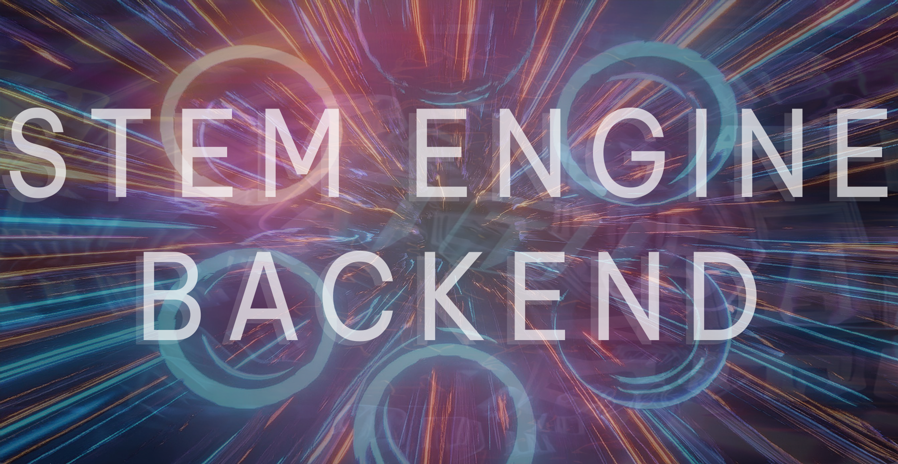

Hypercasual EdTech Crossover Learning Game
A NodeJS, MongoDB, and ExpressJS backend
This project contains entire backend (excluding MongoDB connection string and JWT Secret), oriented towards Unity, which is why a full MERN Stack has not been utilised.
Built for integration with the UnityWebRequest API.
Supports horizontal sharding, asynchronous requests, and a K-Means Clustering (Machine Learning) based lightweight user personalisation system.
Tested with: Postman, Unity, and MongoDB.